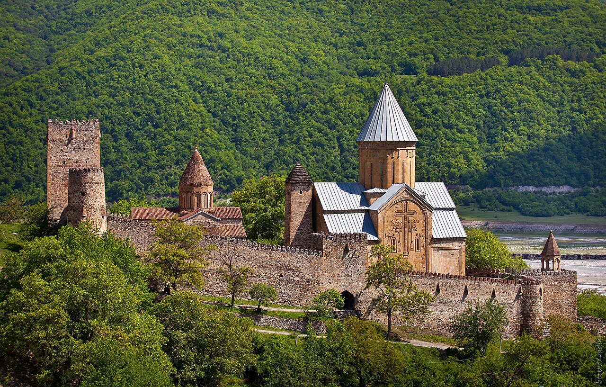
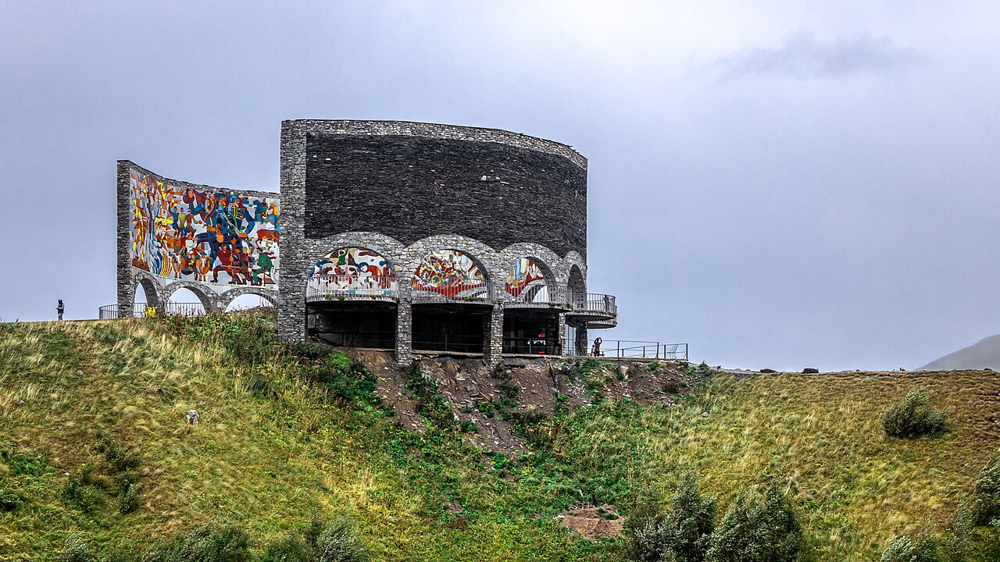
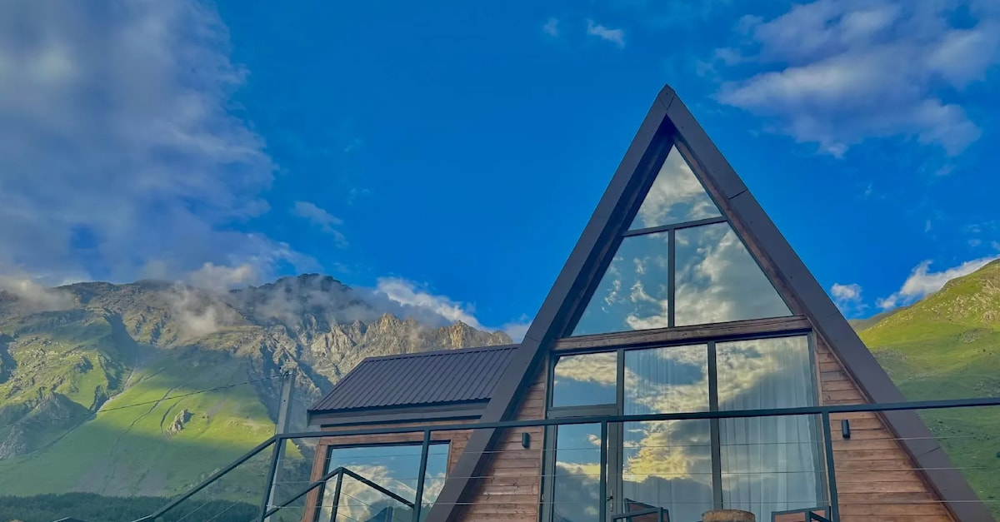

☕ Breakfast at Castle in Old Town
Betlemi Rise· last lazy morning before the road
Eat well — lunch stops on the highway are functional, not memorable. Stock the car with water and a few snacks.

The Georgian Military Highway has been carrying travellers north for two thousand years. Today you take it slowly — a reservoir like turquoise glass, a Soviet-era mosaic on a 600-metre cliff, a pass at 2400 m — until the road drops you into a valley with Mount Kazbek standing over it.
Eat well — lunch stops on the highway are functional, not memorable. Stock the car with water and a few snacks.
Once past the Tbilisi ring road the country opens up — the Mtkvari runs alongside the highway, then peels off west. Trucks heading to Russia are the main thing to watch for; sit back and let the views do the work.
Mid-17th century church and tower complex perched above the reservoir — turquoise water, cypresses, walls weathered to honey. Walk the ramparts, step inside the Church of the Assumption to see the carved facade.
The ski resort is closed in May, the town quiet. A few restaurants stay open year-round; order a khachapuri penovani or a hot khinkali — the air is thinner up here and warm food helps.
A Soviet-era mosaic arch on a 600-metre drop above the Devil's Valley. Scenes from Georgian and Russian history wind around the curve in tile and concrete. The viewpoint is the real reason to stop — mountains in every direction, valley vertiginous below.

The road tops out and starts the long descent into Khevi. The first glimpse of Kazbek — Georgia's third-highest peak at 5054 m — comes in just before Stepantsminda. If clouds are kind, you'll see it from the car.
The cottage has a private terrace pointed at the mountain. Drop bags, settle in, look up — that white pyramid above the village is the view for the next two days.
An easy late-afternoon stretch to undo the drive. The path follows a stream up a narrow gorge to two waterfalls — at the second one the spray hits cliff and rebounds in a fine cold mist. If energy is low, just stroll Stepantsminda's centre instead.
Open kitchen, local ingredients, a calm room after the day. If Maisi is full, Kazbegi Good Food a block over is the reliable backup.
Late spring nights up here are cold. The hot tub on the terrace points exactly the right way. If the sky is clear you'll see more stars than you've seen in years.
